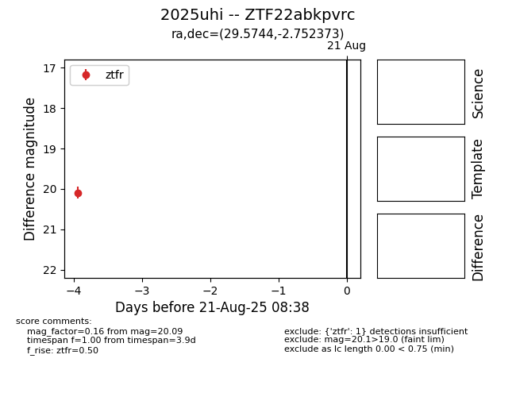

Target 2025uhi at 2025-08-21 11:20, see:
FINK: fink-portal.org/ZTF22abkpvrc
Lasair: lasair-ztf.lsst.ac.uk/objects/ZTF22abkpvrc
ALeRCE: alerce.online/object/ZTF22abkpvrc
TNS: wis-tns.org/object/2025uhi
YSE: ziggy.ucolick.org/yse/transient_detail/2025uhi
alt names
ZTF22abkpvrc (ztf,alerce)
2025uhi (tns,yse)
coordinates:
equatorial (ra, dec) = (29.5744,-2.75237)
galactic (l, b) = (159.0652,-60.84401)
photometry
last ztfr=20.09
1 ztfr detections
